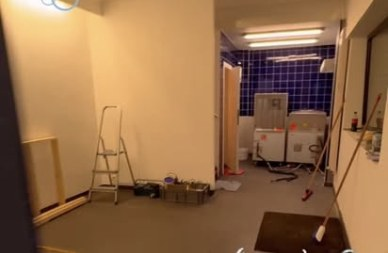
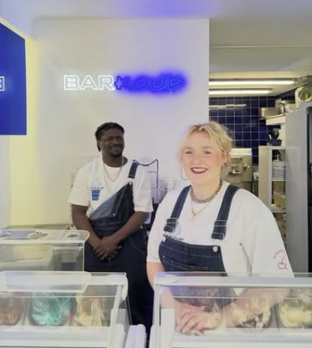
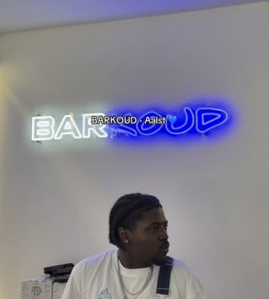
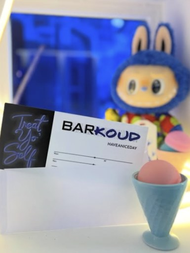
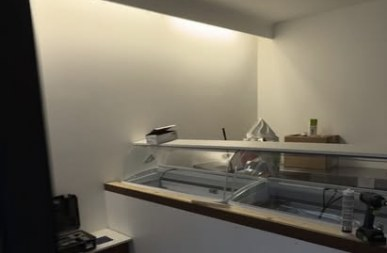
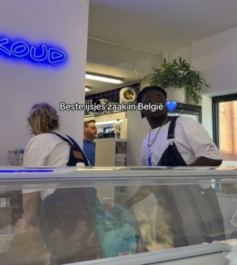

01
De werf
Lege ruimte, stoffige vloer en één muur blauwe tegels.
Verse bolletjes achter een toog vol blauwe tegels. Woensdag tot zondag, 11:30 tot 19 u. Treat yo self.



Elke dag vers, in een hoorntje of een potje. Het aanbod wisselt, de liefde blijft hetzelfde.
Smaken wisselen per dag. Het aanbod van vandaag staat op @barrrkoud.
Tik op een smaak en stapel maar. Kom het daarna in het echt halen, want digitaal ijs smaakt naar niks.
Een leeg hoorntje. Daar doen we iets aan.
Woensdag tot zondag, 11:30 tot 19:00.
Maandag en dinsdag gesloten. Op feestdagen of bij speciale uren laten we het weten via Instagram.
Het begon met een ladder, een rol tape en een muur vol blauwe tegels. Nu komt Aalst hier afkoelen.

Lege ruimte, stoffige vloer en één muur blauwe tegels.

Vitrines erin, toog op zijn plaats. Het begon te kriebelen.

Het neonbord gaat aan. BAR in wit, KOUD in blauw.
Salopettes aan, scheppen klaar. Kom hallo zeggen achter de toog.
@BARRRKOUD
Nieuwe smaken, speciale openingen en af en toe een blauw knuffelmonster in de vitrine.
Molenstraat 15
9300 Aalst
Hartje Aalst, op wandelafstand van de Grote Markt. Kijk uit naar het blauwe neonbord.